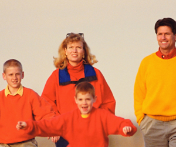

Pedestrian Safety: Keeping Your Kids Safe
In This Article: Young Pedestrians Have Different Needs Be Seen and Heard Preparing the Young Pedestrian Play a Traffic Game Get Outside to Learn
Back to school means walking to school for many. Even if a child rides in a car pool or takes the bus, there could still be up to a block or more of walking involved at either end of the journey. Add off-site school and sports activities, and this means there are many situations where your child should be an alert and proactive pedestrian.
Young Pedestrians Have Different Needs
It’s important to remember that children see, hear, and process information differently than adults. They don’t have the developmental skills to adequately deal with all the complexities of street traffic and other variables. With everyone in motion, this puts kids under age 14 at a greater risk for pedestrian injuries than adults.
Prepare young people to walk safely around traffic, to be aware of their surroundings, and to learn about the safety resources that are present while they are walking.
Be Seen and Heard
With shorter days and season changes ahead, and also early class times and late sports practices, your child’s walking schedule may involve travelling on foot in the dark, at dawn, dusk, the early evening and in rainy and foggy weather.
Invest in reflective materials and insist they be worn. These materials bounce back light so the wearer can be seen immediately. Look for or install reflective materials on clothing, shoes, arm and leg bands, even backpacks and book bags. Reflectors should also be placed prominently on any bicycles or scooters that your child uses for transportation involving school or played with outdoors after school.
Assure your child that it’s okay to speak up, to warn others or get a distracted driver’s attention. While they may not want to call attention to themselves by doing so, the ability to protect their own wellbeing or the safety of their friends makes this something that should be encouraged.
Preparing the Young Pedestrian
We encourage and teach our children to play sports and engage in outdoor pursuits. To help them enjoy these activities and events fully, we should impart a similar working knowledge about road safety and traffic signs.
Discuss with your child how traffic signs, signals, and laws are needed to keep everyone safe while they are walking. A standard set of signs are used to communicate consistently and quickly to all drivers and pedestrians the way to behave. Traffic lights and crosswalk signals are used so that vehicle, bicycle and pedestrian traffic can flow smoothly on the streets.
Ask your child the meanings and responses to common traffic signs they need to know for walking and crossing the street. While you can review signs while at home, make it a practice when you are out driving or walking. Show them how vehicles come in different sizes, and how some vehicles are easier to see and some are more difficult. Show them situations where a large moving vehicle could actually be obscured by another large vehicle, a building or a curve in the road.
Get them talking about streets and roads in the neighborhood, and why some might be more dangerous or safe than others. What about the streets where their friends live, or areas where they are on foot for sports practice and away games. Ask them to think about things they might wear to become more visible to other drivers or other people in motion such as cyclists and skaters.
Play a Traffic Game
Children learn the most when the education is fun and engaging. There’s every reason to go outside and role play all the different street experiences they may encounter on the way to school, or after school heading home or to team practice. Create a busy intersection indoors with tape or outdoors with chalk, and rotate letting your child play the role of the pedestrian and the driver with you or other children. Call out different situations and see how they respond instinctively. If you notice a pattern that concerns you, stop the game and teach from the situation you have observed. As your child becomes more knowledgeable at playing the traffic game, praise them and give them more difficult challenges to consider.
Get Outside to Learn
Graduate from the intersection game by going to different crosswalks that your child may encounter, and make it a natural part of a walk through the neighborhood and exploring the outdoors on foot. Everyone will have some exercise and see up close how to be a safe and responsible walker.
Related Categories